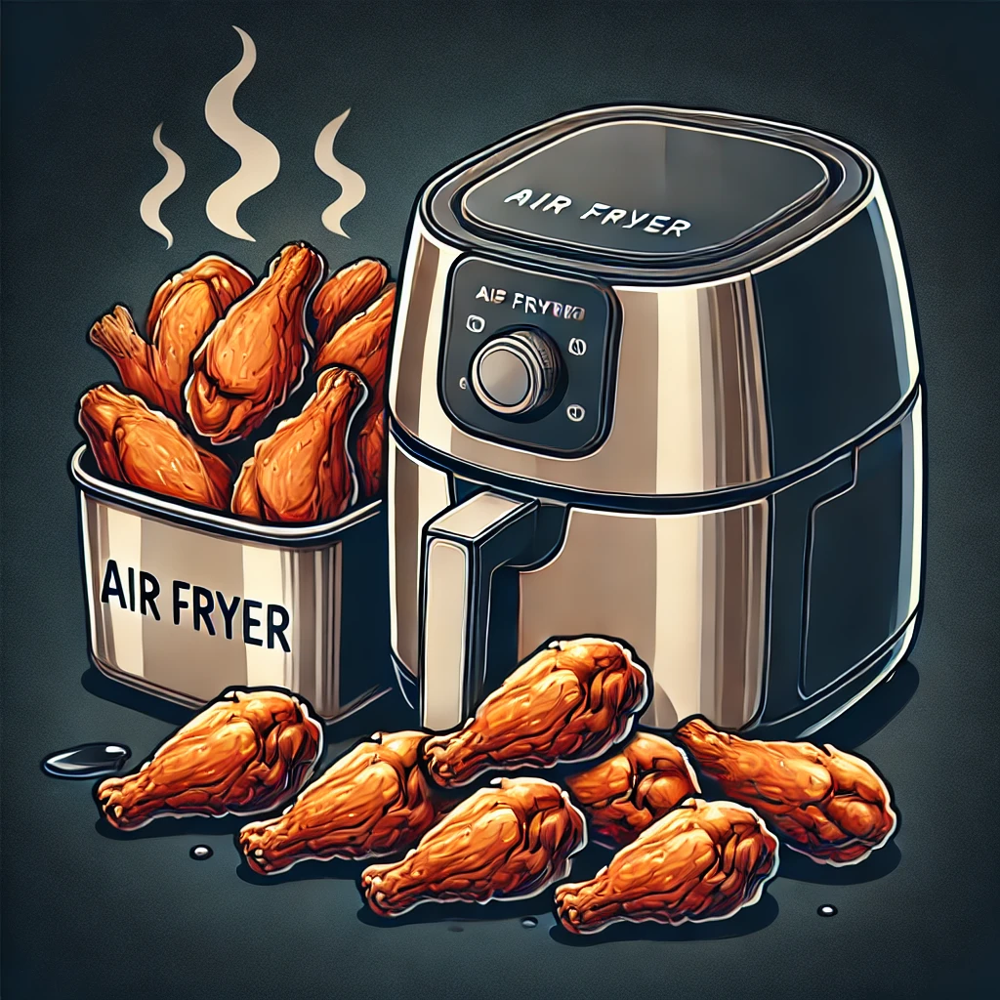

Best Air Fryer for Chicken Wings
Chicken wings are a crowd favorite, whether for a game day snack, a party appetizer, or a family dinner. Air fryers make it easy to achieve crispy, delicious wings with less oil and mess. Here are some of the best air fryers for cooking chicken wings to perfection.
1. Ninja Foodi 8-Quart 9-in-1 Deluxe XL Pressure Cooker & Air Fryer
Key Features:
- Large Capacity: 8-quart pot and a 5-quart Cook & Crisp Basket.
- 9-in-1 Functionality: Pressure cook, air fry, steam, slow cook, sear/sauté, bake/roast, broil, dehydrate, and make yogurt.
- TenderCrisp Technology: Pressure cook to lock in juices, then finish with a crisp.
Why It's Great for Chicken Wings:
The Ninja Foodi’s TenderCrisp Technology ensures your chicken wings are juicy on the inside and crispy on the outside. Its large capacity is perfect for cooking large batches of wings for parties or family gatherings.
2. COSORI Pro LE Air Fryer L501 5-Quart
Key Features:
- 5-Quart Capacity: Ideal for medium-sized batches.
- 9 One-Touch Cooking Functions: Simplifies the cooking process.
- High-Speed Air Circulation: Ensures even cooking and crispiness.
Why It's Great for Chicken Wings:
The COSORI Pro LE Air Fryer’s high-speed air circulation cooks wings evenly and quickly, delivering perfect crispiness. Its user-friendly controls and presets make cooking wings a breeze.
3. Instant Vortex Plus 6-in-1 Air Fryer 4-Quart
Key Features:
- 6-in-1 Functionality: Air fry, broil, roast, dehydrate, bake, and reheat.
- ClearCook Window: Monitor your food without opening the basket.
- EvenCrisp Technology: Ensures perfect crispiness every time.
Why It's Great for Chicken Wings:
The Instant Vortex Plus with its ClearCook window and EvenCrisp technology allows you to achieve consistently crispy wings while monitoring the cooking process without interrupting it.
4. GoWISE USA GW22956 7-Quart Electric Air Fryer
Key Features:
- 7-Quart Capacity: Suitable for large families or gatherings.
- 8 Preset Functions: Includes a dedicated function for wings.
- Rapid Air Technology: Cooks food evenly and quickly.
Why It's Great for Chicken Wings:
The GoWISE USA 7-Quart Air Fryer’s large capacity and preset function for wings make it an excellent choice for cooking large batches of wings quickly and efficiently.
5. Philips Premium Airfryer XXL
Key Features:
- Fat Removal Technology: Reduces and captures excess fat.
- Rapid Air Technology: Ensures even cooking and crispiness.
- Extra Large Capacity: Fits a whole chicken or large batches of wings.
Why It's Great for Chicken Wings:
The Philips Premium Airfryer XXL’s fat removal technology helps make healthier wings without sacrificing flavor. Its large capacity is perfect for cooking big batches of wings.
Conclusion
Choosing the right air fryer can make a big difference in achieving perfectly crispy chicken wings. The models listed above offer excellent features and capacities to ensure your wings are cooked to perfection every time. Whether you're cooking for yourself, your family, or a crowd, these air fryers will help you make delicious wings with ease.